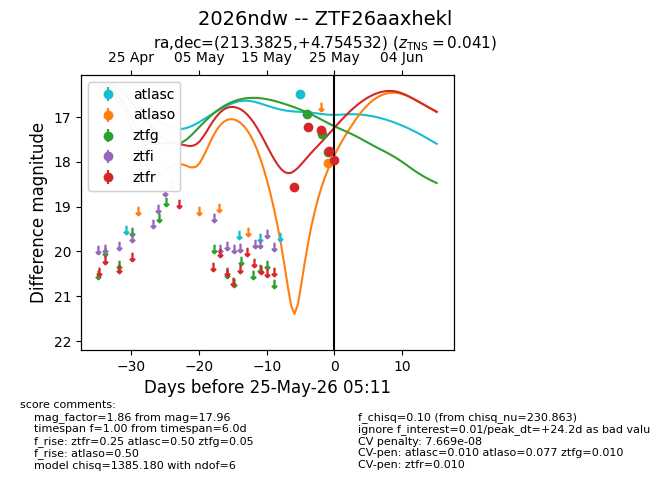
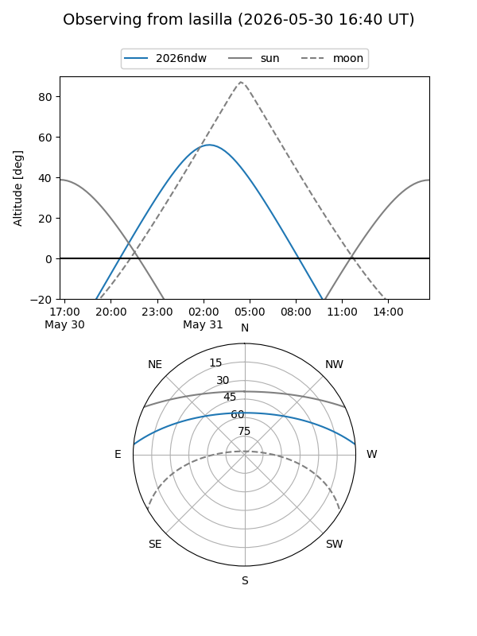
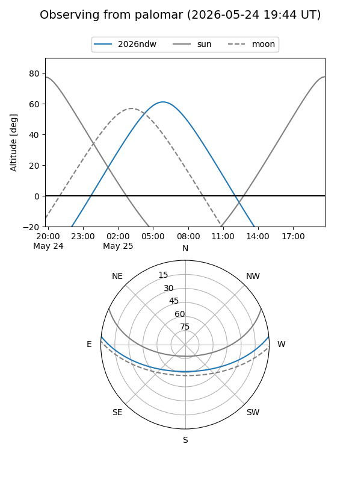
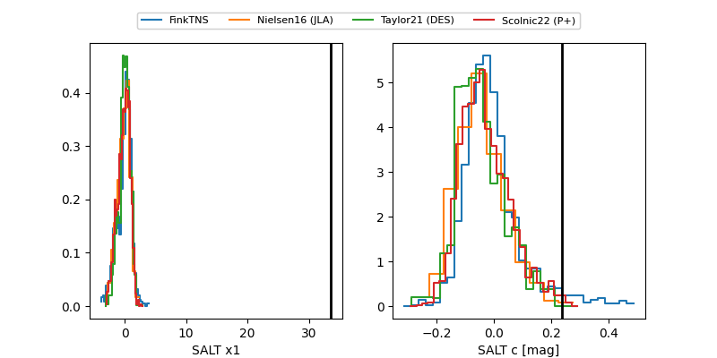

2026ndw
Target 2026ndw at 2026-05-25 05:12
Aliases and brokers:
lsst-FINK: link
lsst-Lasair: link
lsst-ALeRCE: link
ztf-FINK: link
ztf-Lasair: link
ztf-ALeRCE: link
TNS: link
YSE: link
alt names
ZTF26aaxhekl (ztf,fink_ztf)
2026ndw (tns,yse)
Coordinates:
equatorial (ra, dec) = 213.3825,+4.75453
equatorial (HMS+DMS) = 14:13:31.79,+04:45:16.32
galactic (l, b) = (347.7335,+60.27659)
Flags:
likely cv: !
TNS confirmed: SN Ic
TNS redshift: 0.041
Photometry:
last atlasc=16.49, atlaso=18.03, ztfg=17.78, ztfr=17.96
1 atlasc, 1 atlaso, 3 ztfg, 5 ztfr detections
Lightcurve

Visibility


Additional plots
